The purpose of this lab is to further your understanding of networks using Packet Tracer, and in particular to learn about some of the security concerns involved with setting up switches and routers for business. We will look at static routing, advanced topics such as creating VLANs for efficient communication, and the simulation view. We will also consider physically planning a network using Packet Tracer’s Physical View. This is not a comprehensive overview of all of the security concerns, but rather an introduction highlighting some interesting concepts.
Lab 2: Business Network with Packet Tracer
ENSE 472 - Digital Networks - Laboratory
University of Regina - Engineering and Applied Science - Software Systems Engineering
Lab Instructor: Adam Tilson
A Windows, Mac or Linux computer running Packet Tracer. The instructor will only be testing on Windows - please schedule a meeting or meet me after the pre-lab if you are having difficulties getting this working on your local computer.
The Packet Tracer physical view enables you to plan your network physically, in terms of cities and buildings
- We have several levels of granularity - Intercity (country, or world, or province, etc.), home city (city, or neighborhood), office level (floorplan), and wiring closet
- Lecture tie in: What is the name for a network that exists at each of these scales?
- You can assign individual background to each level to better represent the areas
- The lowest level, the wiring closet, is where networking infrasctructure is housed, akin a datacenter
- There may need to be multiple wiring closets in each floor and each building
- In the physical view you see the physical representation of your equipment
- You can place elements where you believe they belong
- Smaller routers may go on tables, servers are rack-mounted
- You will want to cable from the logical view, to create the create network topologies, as we saw last week…
- But when you return to the physical view, the cables will be there
The physical view rounds out your understanding of how these objects work in the real world
Download the following image assets, care of Google and University of Regina:
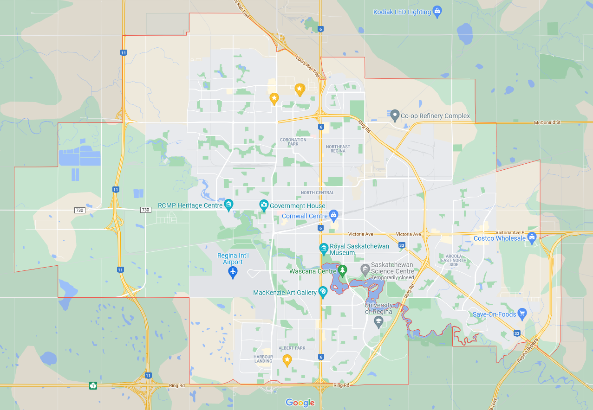
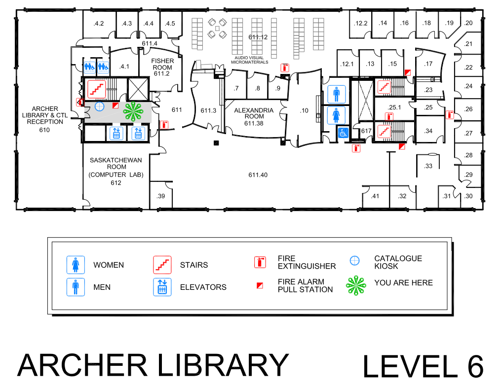
Let’s quickly look at setting up an environment using some photos from Google Maps:
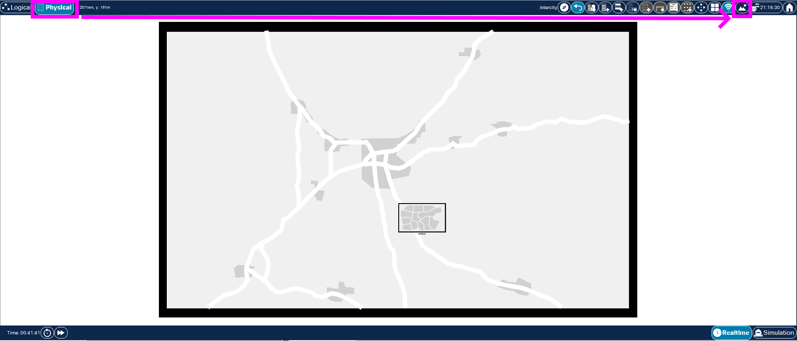
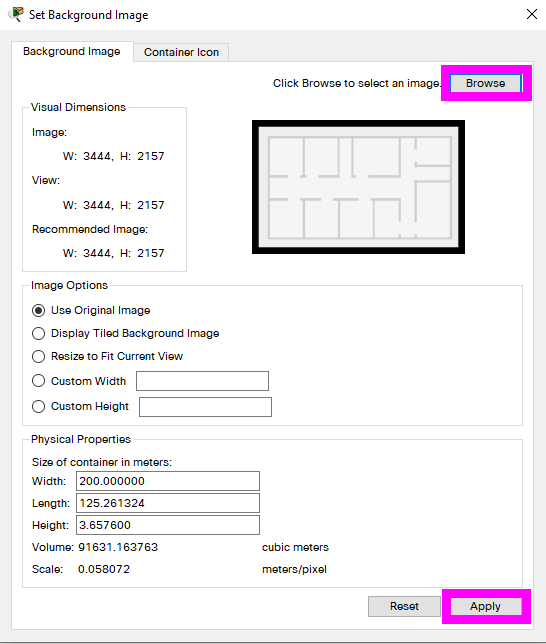
You can navigate up and down layers:
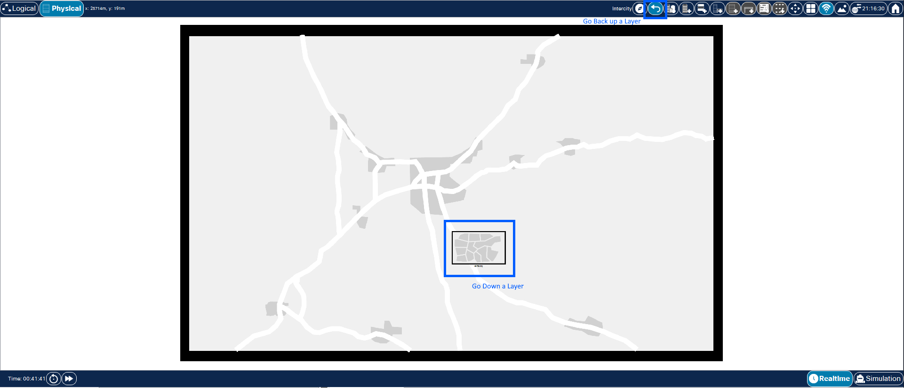
Once you have completed one layer, drop down to the next layer by double clicking on the smaller view. Here’s an example of three layers:
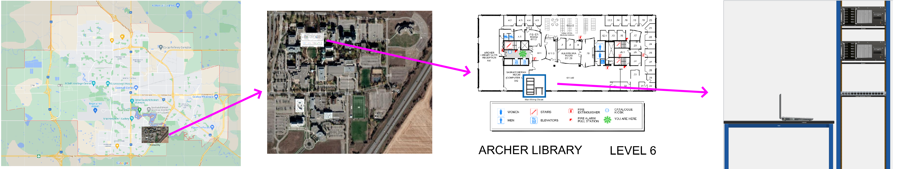
You can also have multiple cities in a country, multiple floorplans in a city, multiple wiring closets in a floorplan, etc.
Other things you can do in physical view:
- See Wifi Ranges (But these will only be accurate if you set all of your container sizes properly)
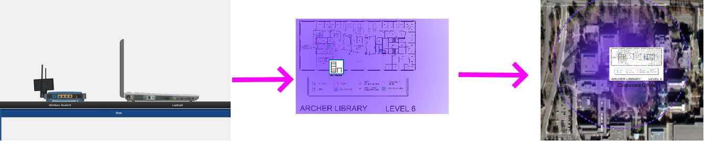
- add furniture and equipment to your wiring closets:
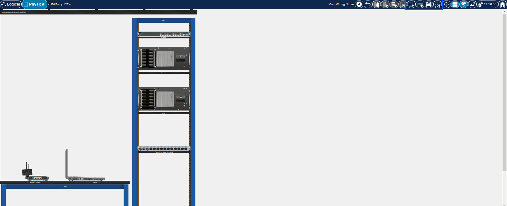
- add elements by dragging and dropping from the equipment area, as we did last week.
When you switch back to logical view, elements are placed somewhat randomly, so you’ll want to also organize them to match appropriate topologies:
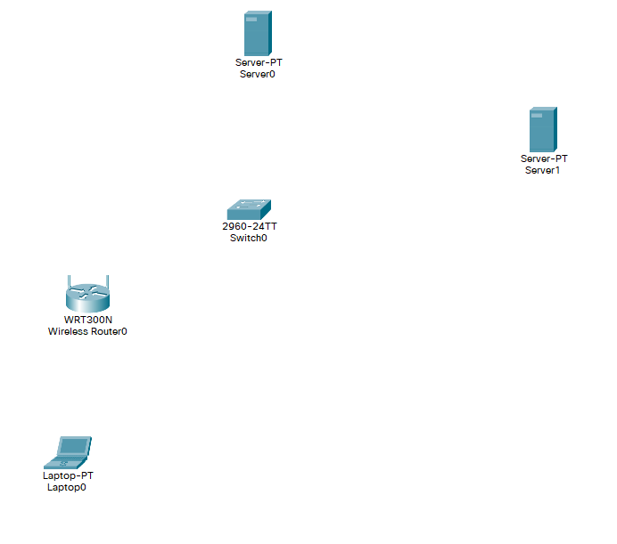
Connect elements appropriately from this view.
In the last lab we saw how we could program a router using the Packet Tracer Command Line Interface (CLI)
- But how do you access this CLI in a real world?
- You would connect using a laptop using TTY over COM (Or USB to COM)
- Or, if the Switch has an IP address assigned, you could Telnet or SSH in remotely
- All of this can be simulated in Packet Tracer, so you can gain some “virtual” real world experience
- Let’s see an example of each:
Note: We’re going to start with a Switch, but many of these processes also work with a Router
Start by adding a laptop, a 2960 Switch and a 4321 Router
- Connect the Laptop to the Switch using a Console cable. (RS232 to Console)
- On the PC, use the
Terminalapplication.- Leave the default settings, and press okay.
- This is an application similar to PuTTy on Windows, which performs Serial emulation with the same settings
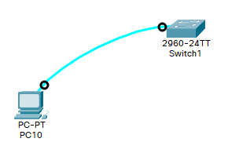
Commands for configuring the Switch are issued from different modes. We briefly saw these last lab, but did not investigate thoroughly. In this sense, it acts something like a state machine. The following diagram lists a few modes we will need to use for different operations, and how to get to them:
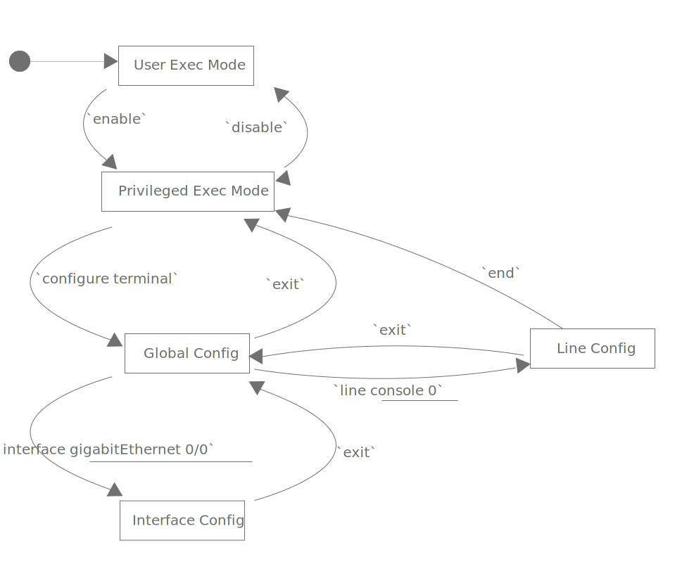
This set of states is not exhaustive, but gives a good starting place.
Switch and Router commands:
Commands will vary by device and mode. To start, query commands:
?
-lists commands and what they do. These will differ by mode.
You can also find all commands which start with a letter or series of letters, e.g.
con?
will show: configure connect
conf?
will only show configure
If your command would only match a single result, you can tab complete.
- You can also issue that shortened phrase as an alternative for the longer command
e.g. instead of typing configure, you can just type conf
you can also query the next command, e.g.
configure ?
returns terminal
So the full command is:
configure terminal
or simply
conf t
A useful configuration to set right away, from global config is:
no ip domain-lookup
- This prevents the router from thinking that mistyped commands are actually domain names, and attempting to do a DNS lookup.
- As you are just starting, expect some typos!
- this will keep the switch from hanging for a few minutes on every typo!
Setting a password for the console connection
Notice that we were able to just plug a cable into our switch and start issuing commands.
- This isn’t very secure, we could be ‘physically hacked’ by anyone who knows how to program a Switch and has physical access to the device.
- Let’s set a password for the console port:
From User Exec Mode:
enable
configure terminal
We want to configure line connections to the console port:
line console 0
Assign a password to this interface:
password switch1234
Force the user to login:
login
We want to return to the default state of the router:
exit
exit
exit
Next time you try to reach user exec mode, you’ll be prompted for the password
Setting a password on privileged exec mode
Privileged Exec Mode is similar to a sudo or root account on linux.
- It is our entry point to making changes to the configuration.
- We should put a password on this account too.
From Global Config:
enable secret admin12345
- secret means this password will be hashed
- As before you can exit out, and then when you come back in confirm that both passwords are prompted
Inspecting our configuration
From privileged exec:
See running configuration with:
show running-config
- you can see the password, but it’s hashed (MD5)
- you can also find the line console password in plain text.
- We’ll fix this in a bit.
Adding passwords to SSH lines
There are a few other ways you can access the command line
- e.g. a computer connected with ethernet could access it over telnet.
- We should set passwords here too!
From Global Configuration…
line vty 0 15
vty stands for virtual teletype, aka telnet, and 0 15 opens 16 concurrent sessions, numbered 0 to 15
password switch123
login
-
assign a password and force login
-
return to privileged exec mode and run:
show run
You can now see passwords for all of the sessions.
Let’s hash those passwords:
from global configure:
service password-encryption
exit
show run
This is a type 7 hash. It’s not particularly secure but it’s better than plain text!
Telnet access
If you want to access a Switch over ethernet, first we must assign the device an IP on the VLAN:
From global configuration:
interface vlan 1
ip address 192.168.0.2 255.255.255.0
ip default-gateway 192.168.0.1
no shutdown
- then telnet to that IP
assign the connected computer a static ip:
192.168.0.10 255.255.255.0
Connect the computer with an ethernet cable
and then from the computers command line:
telnet 192.168.0.2
- use the
vtypassword - now you can configure the router remotely
- If you don’t want all the connected devices to be able to configure the router, you can restrict access to individual VLANs, which will be explained in a later section.
SSH access
Instead of Telnet, you can also access your Switch using SSH. The difference is that SSH encrypts operations which are being sent, compared to telnet which sends them in plain text.
- ensure your PC has the ip address 192.168.0.5 255.255.255.0
- ensure the router has the ip address 192.168.0.2 255.255.255.0
- That was done in the
telnet accesssection
- That was done in the
From global config, run:
hostname S1
gives the switch a proper name
ip domain-name mynetwork.com
gives the current network a domain
crypto key generate rsa
generates a ssh key
2048
number of bits. 2048 is still considered secure so far.
ip ssh version 2
start ssh version 2
line vty 0 15
configure vty for all lines
transport input ssh
turn on ssh on all lines
login local
force login
username admin password admin123456
set a username and password
Now you should be able to connect over SSH
from the command line of a device connected over ethernet run:
ssh -l admin 192.168.0.2
Now the commands you send will be encrypted.
Saving our work
Recall from last week that all of our changes exist only in the device RAM. We can load this configuration on startup with:
from Privileged Exec Mode
copy running-config startup-config
or, shorthand:
copy run start
Always do this before leaving packet tracer so your configuration work is saved!
Last week we saw how to configure gateway addresses on interfaces.
This week we’ll look at assigning static routes to routers
- This tells the router, that, for a given destination address, the address of the connected device which is the next hop
Let’s consider the following example:
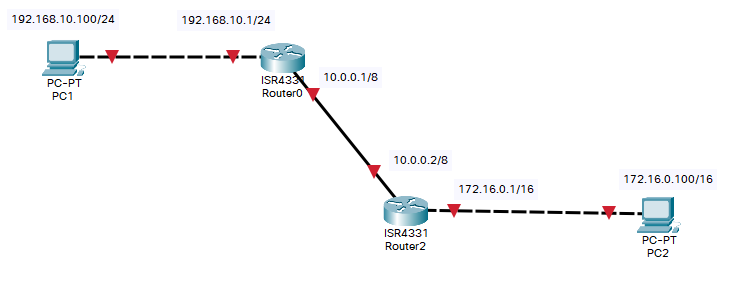
How do we get traffic from the 172.16.x.x/16 network to the 192.16.10.x/24 network and back?
Note that most of these same commands apply to routers as well, so we can follow the same processes to connect to and secure routers as we did with our switches.
Syntax:
ip route <destination> <subnet> <next hop>
example, if the next hop to get to 192.168.10.x / 24, is 10.0.0.1
ip route 192.168.10.0 255.255.255.0 10.0.0.1
Keep in mind, this only goes one way. We also need to do this the other way on the other router.
Placing a 0 is the destination address in the fourth octet, matches any value for this octet. This will route all packets with the destination address 192.168.10.x to the next hops destination 10.0.0.100. This is a known as a wildcard match, and is very powerful.
We can also have an exit interface, e.g.
ip route 192.168.10.0 255.255.255.0 g0/0/1
In this case, rather than specifying the destination IP address of the next hop, we specify which physical interface to send packets out on.
We can see our routes using the following, from privileged exec:
show ip route
We can also set a default route, which is used as a last resort if no other destination is found.
ip route 0.0.0.0 0.0.0.0 {dest}
e.g.
ip route 0.0.0.0 0.0.0.0 10.0.0.2
Recall, 0’s are wildcards, so this means match any IP and any subnet mask, and send the results to the destination.
When computers connect to a switch, by default they are all on the same Virtual LAN (VLAN). This means that packets may be shared freely among these computers using broadcast. Additionally, all these computers are in the same collision domain, though most of the limitations of this are mitigated by using a Switch rather than a hub once it has populated the mac address table. Overall, this configuration is inefficient and insecure if computers have no need to communicate directly across networks, e.g. if the network was shared by different departments or companies which would not communicate directly.
We could fix this by:
- buying more switches, however this is costly
- Using VLANs, Virtual LANs, which splits up a switch into a number of Virtual LANs to better manage traffic
- A Virtual LAN acts just like a LAN
- computers inside the VLAN can communicate directly with other computers in the VLAN
- computers outside the VLAN cannot directly communicate with computers in the VLAN
- Also VLANs can be configured to provide different Quality of Service for the different VLANs, including data and voice
- A Virtual LAN acts just like a LAN
We already looked at the 2960 Router. This router has 24 fast ethernet ports, and 2 gigabit ethernet ports, which we can slice up into VLANs.
Additionally, we can create a trunk, an interface which is shared by the different VLANs to all pass traffic to a router using one port.
Let create 4 VLANS, 3 for devices and one for management
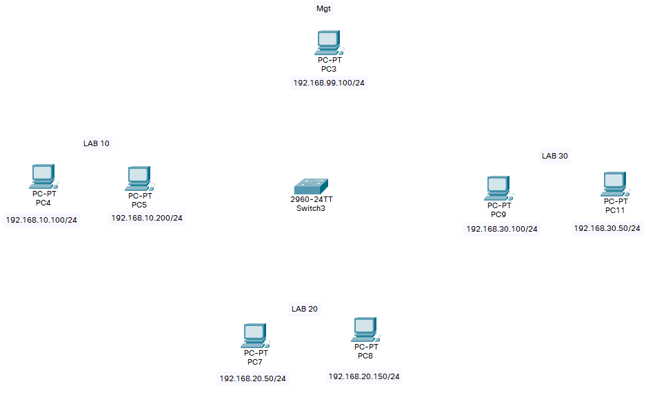
From the Switch CLI…
enable
configure terminal
vlan 99
name mgt
exit
vlan 10
name lab-10
exit
vlan 20
name lab-20
exit
vlan 30
name lab-30
exit
exit
copy running-config startup-config
<enter>
Next, we need to assign some interfaces to each of these vlans:
| ethernet interface | port range | vlan | addresses |
|---|---|---|---|
| fastEthernet 0 | 6 - 10 | vlan 10 | 192.168.10.x |
| fastEthernet 0 | 11 - 17 | vlan 20 | 192.168.20.x |
| fastEthernet 0 | 18 - 23 | vlan 30 | 192.168.30.x |
| fastEthernet 0 | 24 | vlan 99 | 192.168.99.x |
conf t
int range fastEthernet 0/6-10
switchport mode access
switchport access vlan 10
exit
int range fastEthernet 0/11-17
switchport mode access
switchport access vlan 20
exit
int range fastEthernet 0/18-23
switchport mode access
switchport access vlan 30
exit
int fastEthernet 0/24
switchport mode access
switchport access vlan 99
exit
exit
We can see the current state of the VLAN with:
show vlan brief
The management vlan needs an private IP for doing management. The other VLANs will never need to ping the switch, and thus the switch does not need an IP address on that VLAN.
en
conf t
interface vlan 99
ip address 192.168.99.2 255.255.255.0
no shutdown
exit
Native is for compatibility, for older switches that don’t understand what vlans are
Once this is complete, connect each computer to the appropriate interfaces. e.g., those in lab-10 should be connected from interfaces 6 to 10.
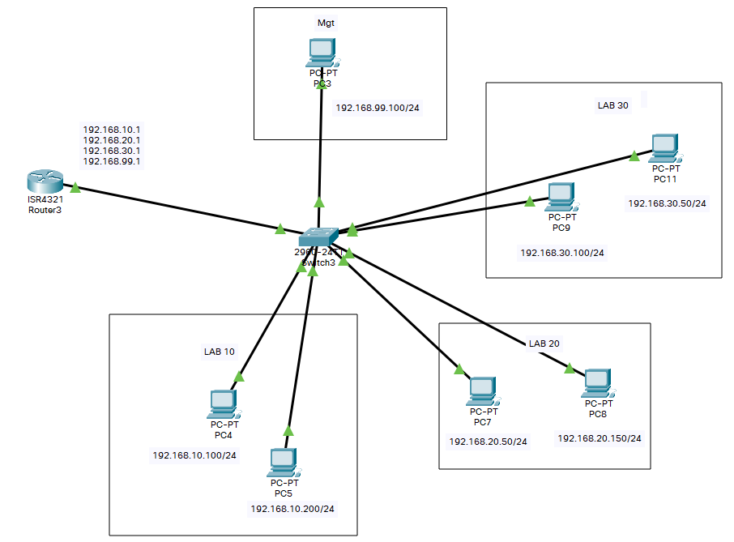
Verify the configuration is correct - PCs within a VLAN should be able to ping eachother, but should not be able to ping PCs in other VLANs. Confirm this is true.
Challenge - VLANs can even span multiple switches. For example you could have lab-10 use ports 6-10 on Switch-A, and use ports 8-20 on Switch-B. Then you would just need to physically connect these two Switches with a crossover cable somewhere within these ranges. Can you make this work?
Router on a Stick
If the connected devices need no internet connectivity, VLANs are fine. However, to gain internet connectivity. We need a Layer-3 device. We could connect these to a layer 3 switch, or we could connect to a single router using a configuration called a ‘Router on a Stick’.
Setting up the trunk
en
conf t
interface fastEthernet 0/1
switchport mode trunk
switchport trunk allowed vlan 1-99
end
We will need to connect this trunk interface to the router. So three network’s traffic is shared over one interface.
On the router side, we need to understand that all three of these networks exist on the incoming interface:
Add the following to a Router CLI
enable
conf t
interface gigabitEthernet 0/0/0.10
encapsulation dot1Q 10
ip address 192.168.10.1 255.255.255.0
no shutdown
exit
interface gigabitEthernet 0/0/0.20
encapsulation dot1Q 20
ip address 192.168.20.1 255.255.255.0
no shutdown
exit
interface gigabitEthernet 0/0/0.30
encapsulation dot1Q 30
ip address 192.168.30.1 255.255.255.0
no shutdown
exit
interface gigabitEthernet 0/0/0.99
encapsulation dot1Q 99
ip address 192.168.99.1 255.255.255.0
no shutdown
exit
interface gigabitEthernet 0/0/0
no shutdown
exit
Connect the router on gigabitEthernet 0/0/0 to the switch fastEthernet 0/1.
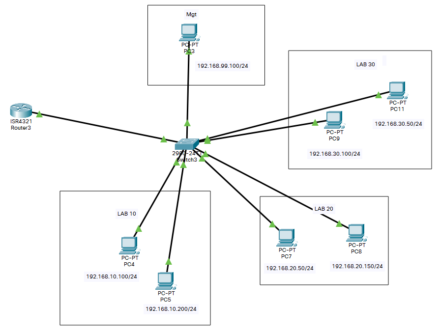
Now this router will act as a gateway for each of the VLANs. The router will unpack the packets with the subnet, and forward them as needed.
What did this accomplish? Should we be able to ping across networks now? Try it and confirm.
This is a bit of a 90s approach, and typically superseded by Layer 3 Switches, but I believe it’s a good learning experience to understand the layer-2 and layer-3 devices.
So far we have largely stayed out of simulation mode. We can use it now to see how our network works. Try sending packets across one VLAN, and across different VLANS.
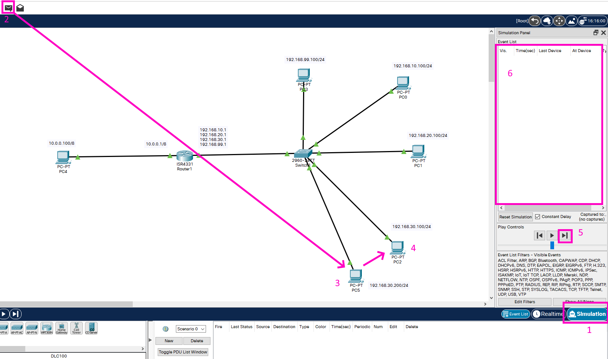
- Switch into Simulation Mode
- Send a PDU
- Select start point
- Select end point
- The play controls let you skip through actions step by step
- The event list shows discrete oprations and protocolas
The packets populate the event list:
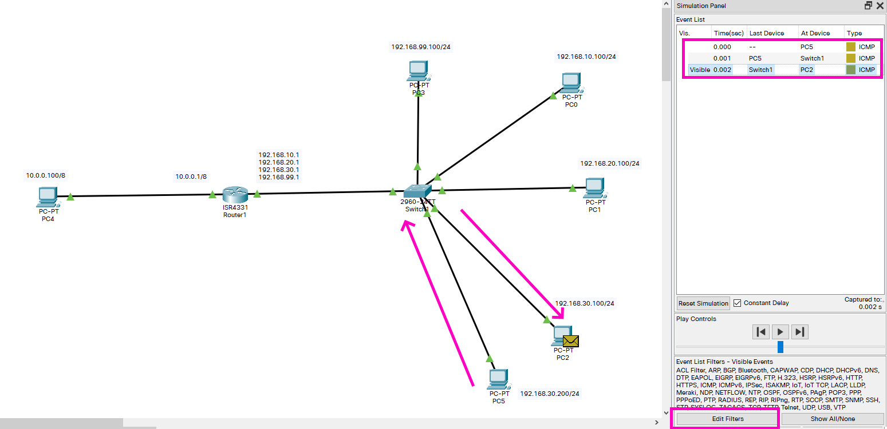
Note: The first time you send a simple PDU, there may be additional traffic. This is because devices are still building their routing tables, and thus require flooding to learn MAC Addresses.
If there is too much traffic on the event list, you can hide some of it by setting up filters in the lower right. Pings, for example. our simple PDU, use the ICMP Protocol, so we can turn others off to only see those packets.
- It may be quicker to show none, and then allow only ICMP
In particular, we see that this packet only needed to get routed through the switch. Let’s also try sending a packet across VLANs.
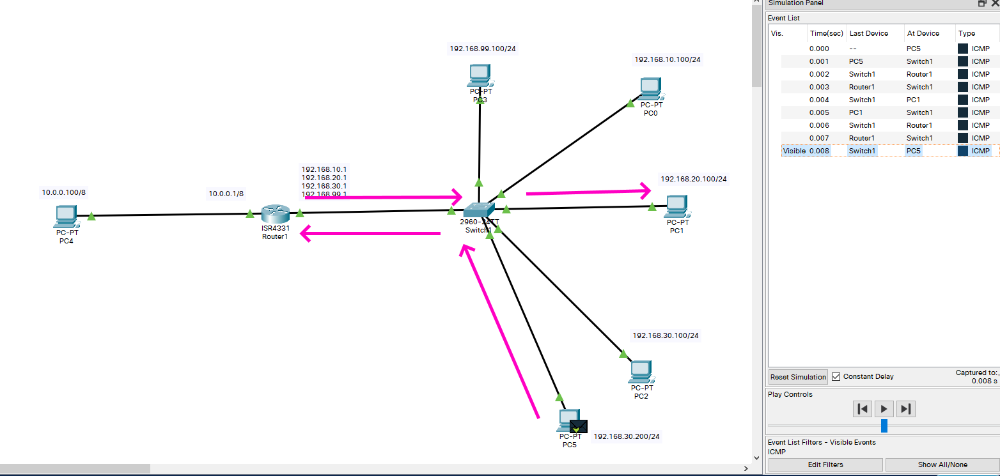
We can look inside a packet by clicking on the envelope:
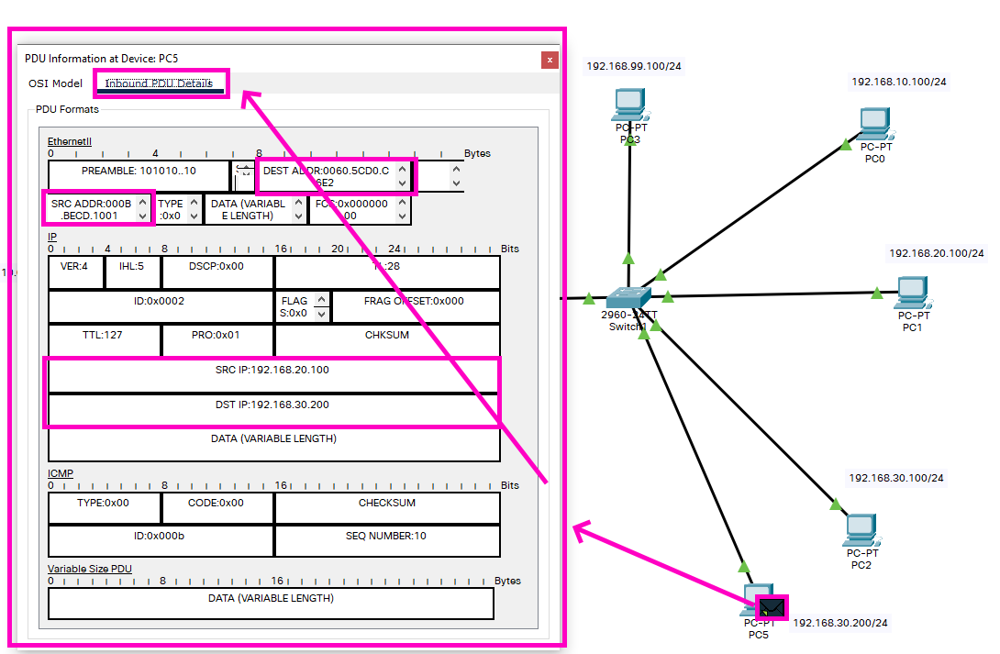
The Major Limitation to the Packet Tracer simulation is that we cannot perform complex simulations, time them, and take data, for example, for research puropses. This is more intended just for learning.
In this assignment, imagine you you are being employed by a Software business startup incubator, (Similar to the Conexus Cultivator). The incubator currently hosts office space for three startups, and it is your job to ensure they have the network requirements to run their business.
The companies include:
- An Indie Game Developer
- Two team members, on Floor 1
- They have created an indie fighting game
- As the game is currently in a closed beta, they need to host downloads, which is ~1 GB download
- They will also need to host a web server for online matches
- A Progressive Web App Developer
- Three team members, on Floor 1
- Their app allows schools to host interactive video content and quizzes
- They too will host local servers
- An algorithm developer
- Four team members, two on Floor 1 and two on Floor 2
- They have two teams, who, due to space restrictions, are working on separate floors.
- It is not feasible to connect all of these PCs to the same Switch.
- Furthermore, for secrecy, they would prefer computers be not connected to the internet.
You will need to:
- Think up some amusing, clever or random names for each of these startups
- Add appropriate images for the intercity, city, and office views (google search floor plans)
- For simplicity, you can have the companies set up on Research Drive at the university
- Servers and switches should be in Wiring Closets, but PCs can be in the Office level floor plan(s)
- Add locations for two startup floors, and place each of the startups appropriately
- Each floor should have a wiring closet in it
- Add a location for a user. For simplicity this user can also be a test user for the PWA and the Fighting Game
- Ensure the home user can connect to all businesses as appropriate
- Employ all of the best security principles as discussed in the course
- This should include a management LAN and machine
- Add a label near the management PC for all the usernames and passwords you have set!
-
Employ VLANs for each company
- Assume you only have access to two 2960 Switches, and a 4321 Routers.
- For this lab, you may represent the internet by at least one additional 4321 router,
- represent the user as an external PC connected to this external router (what type of cable?).
- Don’t forget to set up static routes
This completes our foray into Packet Tracer.